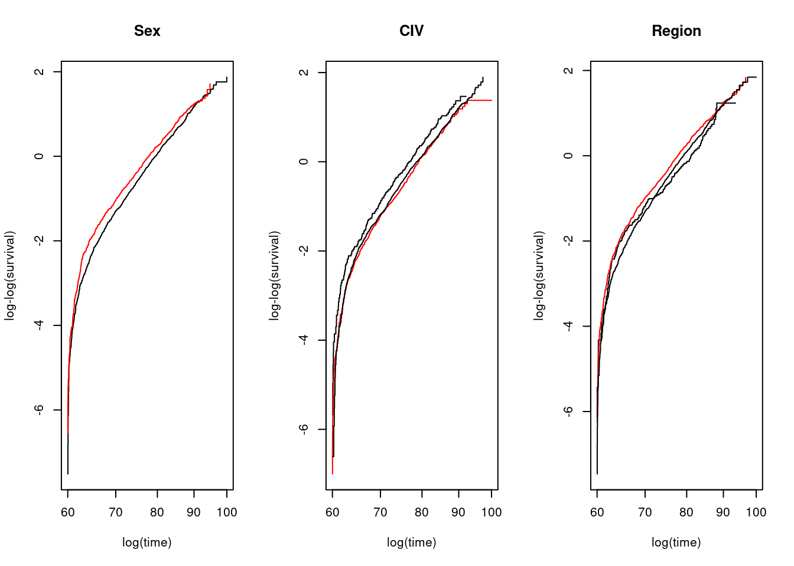
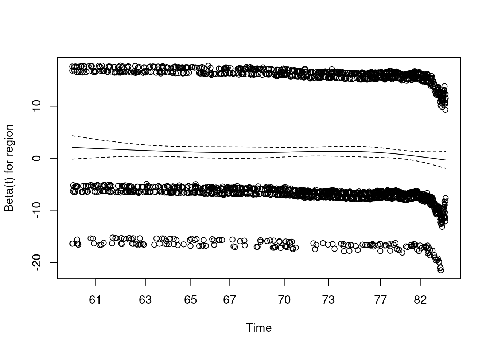
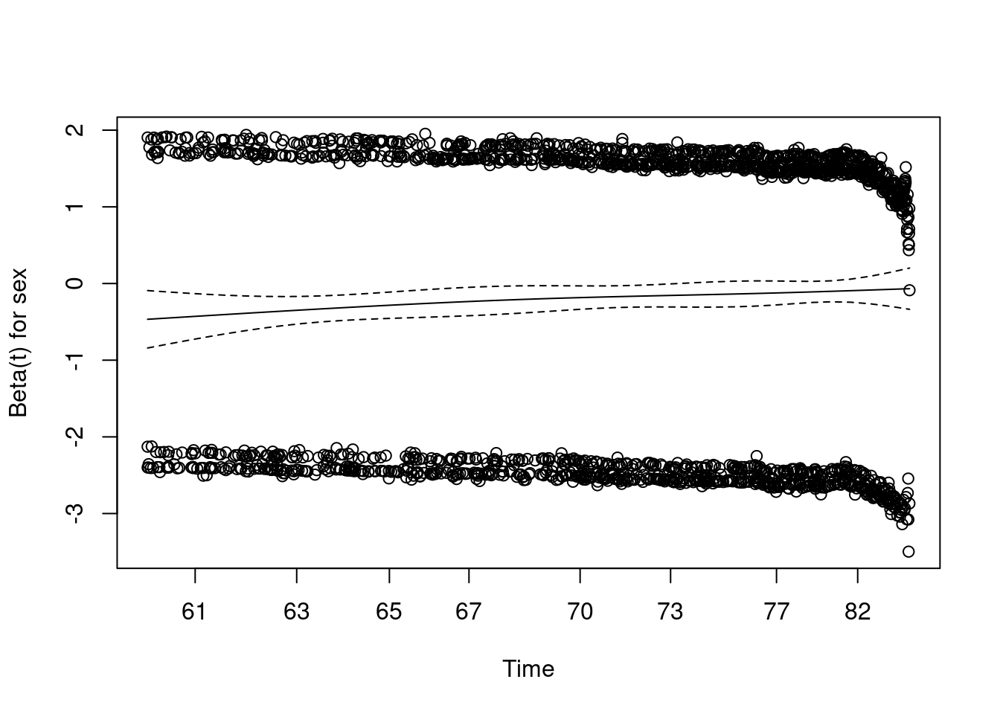
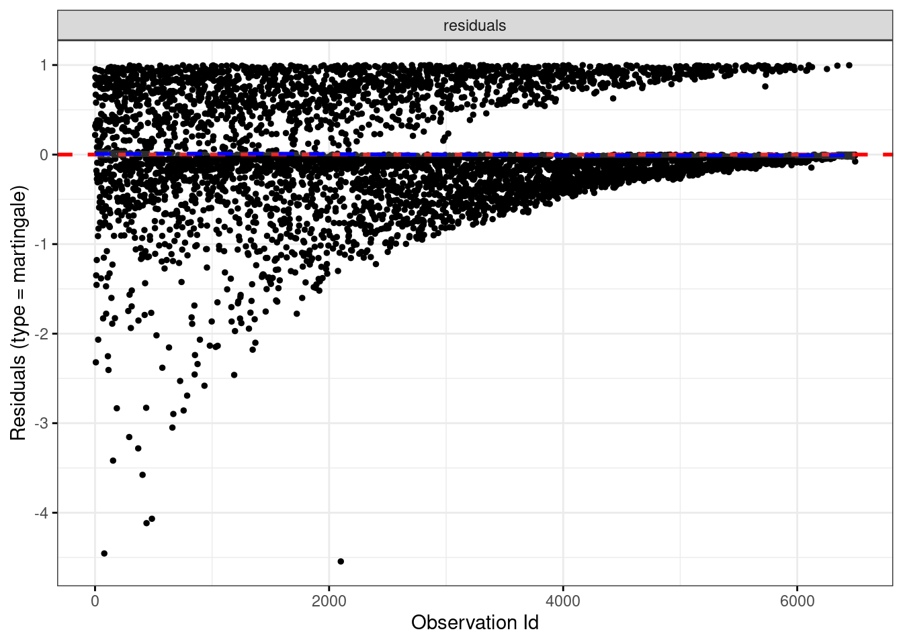

Chapter 6 Cox Proportional Hazard Modeling
6.2 Cox Proportional Hazard Models: Example
6.2.1 Cox model specification
\[h_{(t,X)} = h_0 (t) \exp(\sum_{i=1}^p \beta_i X_i), \;\; \text{where}\; X = (X_1, X_2, \cdots, X_p)\]
The following result was obtained by using coxreg from the eha package.
oldmort_cox <- coxreg(Surv(enter, exit, event) ~ sex + region + imr.birth,
data = oldmort01)
print(summary(oldmort_cox), digits = 4)## Covariate Mean Coef Rel.Risk S.E. LR p
## sex 0.0001
## male 0.406 0 1 (reference)
## female 0.594 -0.185 0.831 0.046
## region 0.0013
## town 0.111 0 1 (reference)
## industry 0.326 0.225 1.252 0.087
## rural 0.563 0.069 1.071 0.087
## imr.birth 15.162 0.005 1.005 0.007 0.5009
##
## Events 1971
## Total time at risk 37824
## Max. log. likelihood -13563
## LR test statistic 31.41
## Degrees of freedom 4
## Overall p-value 2.52611e-06The same results can be obtained by using coxph from the survival package.
oldmort_cox <- coxph(Surv(enter, exit, event) ~ sex + region + imr.birth,
data = oldmort01)
print(summary(oldmort_cox), digits = 4)## Call:
## coxph(formula = Surv(enter, exit, event) ~ sex + region + imr.birth,
## data = oldmort01)
##
## n= 6495, number of events= 1971
##
## coef exp(coef) se(coef) z Pr(>|z|)
## sexfemale -0.185247 0.830899 0.045913 -4.035 5.47e-05 ***
## regionindustry 0.224903 1.252201 0.087093 2.582 0.00981 **
## regionrural 0.069031 1.071470 0.086627 0.797 0.42552
## imr.birth 0.004548 1.004558 0.006742 0.675 0.49994
## ---
## Signif. codes: 0 '***' 0.001 '**' 0.01 '*' 0.05 '.' 0.1 ' ' 1
##
## exp(coef) exp(-coef) lower .95 upper .95
## sexfemale 0.8309 1.2035 0.7594 0.9091
## regionindustry 1.2522 0.7986 1.0557 1.4853
## regionrural 1.0715 0.9333 0.9042 1.2697
## imr.birth 1.0046 0.9955 0.9914 1.0179
##
## Concordance= 0.545 (se = 0.008 )
## Likelihood ratio test= 31.41 on 4 df, p=3e-06
## Wald test = 31.7 on 4 df, p=2e-06
## Score (logrank) test = 31.8 on 4 df, p=2e-06We would prefer to have \(HR > 1\) than \(HR < 1\) to ease interpretation.
oldmort01$male <- relevel(oldmort01$sex, ref = "female")oldmort_cox <- coxph(Surv(enter, exit, event) ~ male + region + imr.birth,
data = oldmort01)
print(summary(oldmort_cox), digits = 4)## Call:
## coxph(formula = Surv(enter, exit, event) ~ male + region + imr.birth,
## data = oldmort01)
##
## n= 6495, number of events= 1971
##
## coef exp(coef) se(coef) z Pr(>|z|)
## malemale 0.185247 1.203516 0.045913 4.035 5.47e-05 ***
## regionindustry 0.224903 1.252201 0.087093 2.582 0.00981 **
## regionrural 0.069031 1.071470 0.086627 0.797 0.42552
## imr.birth 0.004548 1.004558 0.006742 0.675 0.49994
## ---
## Signif. codes: 0 '***' 0.001 '**' 0.01 '*' 0.05 '.' 0.1 ' ' 1
##
## exp(coef) exp(-coef) lower .95 upper .95
## malemale 1.204 0.8309 1.0999 1.317
## regionindustry 1.252 0.7986 1.0557 1.485
## regionrural 1.071 0.9333 0.9042 1.270
## imr.birth 1.005 0.9955 0.9914 1.018
##
## Concordance= 0.545 (se = 0.008 )
## Likelihood ratio test= 31.41 on 4 df, p=3e-06
## Wald test = 31.7 on 4 df, p=2e-06
## Score (logrank) test = 31.8 on 4 df, p=2e-06The following code will extract coefficients and model fit statistics.
cox_coef <- summary(oldmort_cox)$coefficients
cox_fit <- rbind(
"Wald" = oldmort_cox$wald.test,
"Score(log_rank)" = oldmort_cox$score
)knitr::kable(cox_coef, digits=2)| coef | exp(coef) | se(coef) | z | Pr(>|z|) | |
|---|---|---|---|---|---|
| malemale | 0.19 | 1.20 | 0.05 | 4.03 | 0.00 |
| regionindustry | 0.22 | 1.25 | 0.09 | 2.58 | 0.01 |
| regionrural | 0.07 | 1.07 | 0.09 | 0.80 | 0.43 |
| imr.birth | 0.00 | 1.00 | 0.01 | 0.67 | 0.50 |
knitr::kable(cox_fit, digits=2)| Wald | 31.7 |
| Score(log_rank) | 31.8 |
6.2.2 Model 1: No covariates
oldmort_cox01 <- coxreg(Surv(enter, exit, event) ~ sex ,
data = oldmort01)
cox_coef01 <- as.data.frame(summary(oldmort_cox01)$coefficients)
cox_fit01 <- rbind(
"Wald" = oldmort_cox01$wald.test,
"Score(log_rank)" = oldmort_cox01$score
)6.2.3 Model 2: Categorical covariate: region
oldmort_cox02 <- coxreg(Surv(enter, exit, event) ~ sex + region ,
data = oldmort01)
cox_coef02 <- as.data.frame(summary(oldmort_cox02)$coefficients)
cox_fit02 <- rbind(
"Wald" = oldmort_cox02$wald.test,
"Score(log_rank)" = oldmort_cox02$score
)6.2.4 Model 3: Continuous covariate: imr.birth
oldmort_cox03 <- coxreg(Surv(enter, exit, event) ~ sex + region + imr.birth,
data = oldmort01)
cox_coef03 <- as.data.frame(summary(oldmort_cox03)$coefficients)
cox_fit03 <- rbind(
"Wald" = oldmort_cox03$wald.test,
"Score(log_rank)" = oldmort_cox03$score
)cox_coef <- cbind(setDT(cox_coef01), setDT(cox_coef02), setDT(cox_coef03))## Warning in as.data.table.list(x, keep.rownames = keep.rownames, check.names =
## check.names, : Item 2 has 3 rows but longest item has 4; recycled with
## remainder.cox_fit <- cbind(cox_fit01, cox_fit02, cox_fit03)
knitr::kable(cox_coef, digits=2)| coef | exp(coef) | se(coef) | z | Wald p | coef | exp(coef) | se(coef) | z | Wald p | coef | exp(coef) | se(coef) | z | Wald p |
|---|---|---|---|---|---|---|---|---|---|---|---|---|---|---|
| -0.19 | 0.82 | 0.05 | -4.23 | 0 | -0.19 | 0.83 | 0.05 | -4.07 | 0.00 | -0.19 | 0.83 | 0.05 | -4.03 | 0.00 |
| -0.19 | 0.82 | 0.05 | -4.23 | 0 | 0.21 | 1.24 | 0.08 | 2.50 | 0.01 | 0.22 | 1.25 | 0.09 | 2.58 | 0.01 |
| -0.19 | 0.82 | 0.05 | -4.23 | 0 | 0.05 | 1.05 | 0.08 | 0.62 | 0.53 | 0.07 | 1.07 | 0.09 | 0.80 | 0.43 |
| -0.19 | 0.82 | 0.05 | -4.23 | 0 | -0.19 | 0.83 | 0.05 | -4.07 | 0.00 | 0.00 | 1.00 | 0.01 | 0.67 | 0.50 |
knitr::kable(cox_fit, digits=2)| Score(log_rank) | 17.96 | 31.34 | 31.8 |
#fcox_coef <- flextable(head(cox_coef))#fcox_coef <- flextable(head(cox_coef))
#fcox_coef <- add_body_row(
# fcox_coef,
# values = c("", "Model 1", "Model 2", "Model 3"),
# colwidths = c(1, 3, 3, 3), top = TRUE
#)
#fcox_coef6.3 Interpretation
- Comparisons between the crude model (i.e., no confounders) and adjusted models
- Often used to assess if confounding effect exists
- Report both even if there is no difference of the model fits for crude and adjusted models
- test statistics: difference of -2LL / difference of d.f.s, under \(\chi^2\) distributions
- First, let’s examine the model fit statistics.
- Global statistical significance of the model: The output gives p-values for three alternative tests for overall significance of the model: The likelihood-ratio test, Wald test, and score logrank statistics. These three methods are asymptotically equivalent. For large enough \(N\), they will give similar results. For small \(N\), they may differ somewhat. The Likelihood ratio test has better behavior for small sample sizes, so it is generally preferred.
- Wald statistics
- \(z = \frac{coef}{se(coef)}\) is normally distributed
- Likelihood ratio (LR) statistics
- -2 Log likelihood (-2LL)
- “In general, the LR and Wald statistics may not give exactly the same answer. Statisticians have shown that of the two test procedures, the LR statistic has better statistical properties, so when in doubt, you should use the LR test.”(Kleinbaum DG, Klein M. Survival Analysis. Springer New York; 2012. doi:10.1007/978-1-4419-6646-9)
- Score (logrank) test
- Concordance ()
- Wald statistics
- Global statistical significance of the model: The output gives p-values for three alternative tests for overall significance of the model: The likelihood-ratio test, Wald test, and score logrank statistics. These three methods are asymptotically equivalent. For large enough \(N\), they will give similar results. For small \(N\), they may differ somewhat. The Likelihood ratio test has better behavior for small sample sizes, so it is generally preferred.
- Now, let’s examine coefficients.
- Note that there is no \(\beta_0\) term
- coef: log(Hazard Ratio): A positive sign means that the hazard (risk of death) is higher, and thus the prognosis worse, for subjects with higher values of that variable. For the 0 and 1 variable, the Cox model gives the hazard ratio (HR) for the second group relative to the first group.
- exp(coef): Hazard ratio (HR) (\(exp(0.1978)=1.2187\)), the hazard for the test group is 1.2 times the hazard for the standard group.
- As other regression outputs, we have point estimates, ses, \(p\)-values, and confidence intervals.
- Statistical significance: The column marked “\(z\)” gives the Wald statistic value. It corresponds to the ratio of each regression coefficient to its standard error (\(z\) = coef/se(coef)). The wald statistic evaluates, whether the beta (\(\beta\)) coefficient of a given variable is statistically significantly different from 0.
- \(p\)-value or CI? (Greenland, S., Senn, S.J., Rothman, K.J. et al. Statistical tests, P values, confidence intervals, and power: a guide to misinterpretations. Eur J Epidemiol 31, 337–350 (2016). https://doi.org/10.1007/s10654-016-0149-3)
6.4 Proportional hazard (PH) assumption
- Mathematical expression1
\[ h_x(t) = \phi^x h_o(t),\;\; t>0,\;\; x=0,1,\;\; \phi>0 \]
when \(x=0\), \(h_0(t) = h_0(t)\) and when \(x=1\), \(h_0(t) = \phi h_0(t)\) When \(\beta = \log(\phi)\), \[ h_x(t) = h(t; x) = e^{\beta x} h_o(t),\;\; t>0,\;\; x=0,1,\;\; -\infty < \beta < \infty \]
For multiple groups ($= (_1, _2, , _k) $), \[ h_x(t) = h(t; x) = e^{x_1 \beta_1 + x_2 + \beta_2 + \cdots + x_k \beta_k} h_o(t) = h_0 (t)e^{x \beta},\;\; t>0,\;\; x=0,1,\;\; -\infty < \beta < \infty \]
\(h_0 (t)\): baseline hazard is a function of \(t\) but not \(X\)’s
- When all the \(X\)’s are equal to 0, than the formula reduces to the baseline hazard function, \(h_0 (t)\) as \(e^0 = 1\)
- When no \(X\)’s are in the model, than the formula reduces to the baseline hazard function, \(h_0 (t)\).
\(exp(\sum_{i=1}^p \beta_i X_i)\): the exponential component is a function of \(X\)’s but not \(t\) (i.e., \(X\)’s are time-independent variables)
A time-independent variable is defined to be any variable whose value for a given individual does not change over time. (e.g., sex, race/ethnicity)
It may be appropriate to treat Age or Height as time-independent in the analysis if their values do not change much over time or if the effect of such variables on survival risk depends essentially on the value at only one measurement.
Recall that \[\hat{HR} = \frac{\hat{h} (t, X^*)}{\hat{h} (t, X)} = \frac{h_0 (t) \exp(\sum_{i=1}^p \beta_i X_i^*)}{h_0 (t) \exp(\sum_{i=1}^p \beta_i X_i)} = \frac{\exp(\sum_{i=1}^p \beta_i X_i^*)}{\exp(\sum_{i=1}^p \beta_i X_i)} = \exp[{\sum_{i=1}^p \hat{\beta_i}(X_i^* - X_i)}]\]
Notice that the baseline hazard function \(h_0 (t)\) appears in both the numerator and denominator of the hazard ratio and cancels out of the formula.
The final expression for the hazard ratio therefore involves the estimated coefficients \(\hat{\beta_i}\) and the values of \(X^*\) and \(X\) for each variable. However, because the baseline hazard has canceled out, the final expression does not involve time \(t\).
Thus, once the model is fitted and the values for \(X^*\) and \(X\) are specified, , which does not depend on time \(t\):
\[ \hat{HR} = \frac{\hat{h} (t, X^*)}{\hat{h} (t, X)} = exp[{\sum_{i=1}^p \hat{\beta_i}(X_i^* - X_i)}] = \theta\;\; \text{therefore,} \hat{h} (t, X^*) = \hat{\theta}\hat{h} (t, X)\] - - In the Cox PH model with 0 and 1 for {X_1}, \(\hat{\theta}=e^{\hat{\beta}}\) - When the PH assumption is in appropriate (e.g., the hazards cross), a Cox PH model is inappropriate and alternative model (e.g., extended Cox model) should be used
6.5 Extended Cox model
- It is possible to consider \(X\)’s which do involve \(t\), so that \(X\)s are called time-dependent variables.
- The extended Cox model no longer satisfies the proportional hazard assumption.
6.6 Evaluating the Proportional hazard (PH) assumption
The Cox PH model assumes that the hazard ratio comparing any two specifications of predictors is constant over time. Equivalently, this means that the hazard for one individual is proportional to the hazard for any other individual, where the proportionality constant is independent of time.
The PH assumption is not met if the graph of the hazards cross for two or more categories of a predictor of interest. However, even if the hazard functions do not cross, it is possible that the PH assumption is not met. Thus, rather than checking for crossing hazards, we must use other approaches to evaluate the reasonableness of the PH assumption.
6.6.1 Graphical evaluation
- Comparing estimated –ln(–ln) survivor curves over different (combinations of) categories of variables
- assessing the PH assumption for variables one-at-a-time, or 2) assessing the PH assumption after adjusting for other variables.
- Parallel curves, say comparing males with females, indicate that the PH assumption is satisfied
- A log–log survival curve is simply a transformation of an estimated survival curve that results from taking the natural log of an estimated survival probability . Mathematically, we write a log–log curve as \(-ln(-ln \hat{S})\). Note that the log of a probability such as \(\hat{S}\) is always a negative number. Because we can only take logs of positive numbers, we need to negate the first log before taking the second log. The value for \(-ln(-ln \hat{S})\) may be positive or negative, either of which is acceptable
- by definition, \(-ln(-ln \hat{S})= -ln (\int_0^t h(u)du)\)
- The scale of an estimated survival curve (\(\hat{S}\)) ranges between 0 and 1, whereas the corresponding scale for a \(-ln(-ln \hat{S})\) ranges between \(-\infty\) and \(+\infty\)
- By empirical plots, we mean that do not assume an underlying Cox model. Alternatively, one could plot .
- If observed and predicted curves are “visually” parallel, then the PH assumption is reasonable.
- How much parallel is parallel?
- Too subjective decision: assume PH is OK unless strong evidence of non-parallelism
- many categories data: different categorizations may give different graphical pictures
- Assessing the PH assumption after adjusting for other variables: rather than using Kaplan–Meier curves, make a comparison using adjusted log–log survival curves under the PH assumption for one predictor adjusted for other predictors
- Comparing observed with predicted survivor curves
- If for each category of the predictor being assessed, the observed and expected plots are “close” to one another, we then can conclude that the PH assumption is satisfied.
- “how close is close?”
par(mfrow=c(1,3))
plot(survfit(Surv(enter, exit, event) ~ male, data = oldmort01),
col=c("black", "red")
, fun = "cloglog"
, xlab = "log(time)"
, ylab = "log-log(survival)"
, main = "Sex")
plot(survfit(Surv(enter, exit, event) ~ civ, data = oldmort01),
col=c("black", "red")
, fun = "cloglog"
, xlab = "log(time)"
, ylab = "log-log(survival)"
, main = "CIV")
plot(survfit(Surv(enter, exit, event) ~ region, data = oldmort01),
col=c("black", "red")
, fun = "cloglog"
, xlab = "log(time)"
, ylab = "log-log(survival)"
, main = "Region")
par(mfrow=c(1,3))
plot(survfit(Surv(enter, exit, event) ~ sex, data = child),
col=c("black", "red")
, fun = "cloglog"
, xlab = "log(time)"
, ylab = "log-log(survival)"
, main = "Sex")
plot(survfit(Surv(enter, exit, event) ~ socBranch, data = child),
col=c("black", "red")
, fun = "cloglog"
, xlab = "log(time)"
, ylab = "log-log(survival)"
, main = "Soc Branch")
plot(survfit(Surv(enter, exit, event) ~ illeg, data = child),
col=c("black", "red")
, fun = "cloglog"
, xlab = "log(time)"
, ylab = "log-log(survival)"
, main = "Illegal")
6.6.2 Goodness-of-fit (GOF)
- A nonsignificant (i.e., large) \(p\)-value from large sample \(z\) or \(\chi^2\) statistics , say greater than 0.10, suggests that the PH assumption is reasonable, whereas a small \(p\)-value, say less than 0.05, suggests that the variable being tested does not satisfy this assumption.
- More objective decision using a statistical test than graphical evaluation
- Schoenfeld residuals
- The idea behind the statistical test is that if the PH assumption holds for a particular covariate then the Schoenfeld residuals for that covariate will not be related to survival time.
- For each predictor in the model, Schoenfeld residuals are defined for every subject who has an event. For example, consider a Cox PH model with three predictors:
sex,region, andimr.birth. Then there are three Schoenfeld residuals defined for each subject who has an event, one for each of the three predictors. - Three step process
- Step 1. Run a Cox PH model and obtain Schoenfeld residuals for each predictor.
- Step 2. Create a variable that ranks the order of failures. The subject who has the first (earliest) event gets a value of 1, the next gets a value of 2, and so on.
- Step 3. Test the correlation between the variables created in the first and second steps. The null hypothesis is that the correlation between the Schoenfeld residuals and ranked failure time is zero
- Rejection of the null hypothesis leads to a conclusion that the PH assumption is violated
- However, 1) a \(p\)-value can be driven by sample size; 2) A gross violation of the null assumption may not be statistically significant if the sample is very small; and 3) conversely, a slight violation of the null assumption may be highly significant if the sample is very large.
cox.gof <- coxph(Surv(enter, exit, event) ~ sex + region + imr.birth,
data = oldmort01)
res.zph <- cox.zph(cox.gof, transform = c("km","rank","idenityt")[2])
res.zph## chisq df p
## sex 5.25 1 0.0220
## region 9.83 2 0.0073
## imr.birth 6.54 1 0.0105
## GLOBAL 18.96 4 0.0008plot(res.zph)
6.6.3 Time-dependent variable approaches
- The Cox model is extended to contain product (i.e., interaction) terms involving the time-independent variable being assessed and some function of time. If the coefficient of the product term turns out to be significant, we can conclude that the PH assumption is violated.
- Using the above one-at-a-time model, we assess the PH assumption by testing for the significance of the product term. The null hypothesis is therefore “d equal to zero.” Note that if the null hypothesis is true, the model reduces to a Cox PH model containing the single variable X. The test can be carried out using .
- To assess the PH assumption for several predictors simultaneously, the form of the extended model is
\[h(t,X) =h_0(t) exp\left[\sum_{i=1}^p (\beta_i X_i + \delta_i (X_i \times g_i(t)))\right], \text{ where } g_i(t) \text{ is a function of time for } i^{th} \text{ predictor}\] - This model contains the predictors being assessed as main effect terms and also as product terms with some function of time. Note that different predictors may require different functions of time; hence, the notation \(g_i (t)\) is used to define the time function for the \(i^{th}\) predictor - With the above model, we test for the PH assumption simultaneously by assessing the null hypothesis that all the \(\delta_i\) coefficients are equal to zero. This requires a likelihood ratio chi-square statistic with \(p\) degrees of freedom, where \(p\) denotes the number of predictors being assessed. The LR statistic computes the difference between the log likelihood statistic (i.e., \(-2\; ln\; L\)) for the PH model and the log likelihood statistic for the extended Cox model. Note that under the null hypothesis, the model reduces to the Cox PH model.
- If the above test is found to be significant, then we can conclude that the PH assumption is not satisfied for at least one of the predictors in the model. To determine which predictor(s) do not satisfy the PH assumption, we could proceed by backward elimination of nonsignificant product terms until a final model is attained.
- The primary drawback of the use of an extended Cox model for assessing the PH assumption concerns the choice of the functions \(g_i (t)\) for the time-dependent product terms in the model. This choice is typically not clear-cut, and it is possible that different choices, such as \(g(t)\) equal to \(t\) versus log \(t\) versus a heaviside function, may result in different conclusions about whether the PH assumption is satisfied.
6.6.4 Testing for Influential Observations
Testing for Influential Observations{}
To test influential observations or outliers, we can visualize either the deviance residuals or the dfbeta values
type: the type of residuals to present on Y axis. Allowed values include one of c(“martingale”, “deviance”, “score”, “schoenfeld”, “dfbeta”, “dfbetas”, “scaledsch”, “partial”).
It’s also possible to check outliers by visualizing the deviance residuals. The deviance residual is a normalized transform of the martingale residual. These residuals should be roughtly symmetrically distributed about zero with a standard deviation of 1.
- Positive values correspond to individuals that “died too soon” compared to expected survival times.
- Negative values correspond to individual that “lived too long”.
- Very large or small values are outliers, which are poorly predicted by the model.
survminer::ggcoxdiagnostics(oldmort_cox03, type = "martingale",
linear.predictions = FALSE, ggtheme = theme_bw())## Warning: `gather_()` was deprecated in tidyr 1.2.0.
## ℹ Please use `gather()` instead.
## ℹ The deprecated feature was likely used in the
## survminer package.
## Please report the issue at
## <https://github.com/kassambara/survminer/issues>.
## This warning is displayed once every 8 hours.
## Call `lifecycle::last_lifecycle_warnings()` to see
## where this warning was generated.## `geom_smooth()` using formula = 'y ~ x'
survminer::ggcoxdiagnostics(oldmort_cox03, type = "schoenfeld",
linear.predictions = FALSE, ggtheme = theme_bw())## `geom_smooth()` using formula = 'y ~ x'
survminer::ggcoxdiagnostics(oldmort_cox03, type = "dfbeta",
linear.predictions = FALSE, ggtheme = theme_bw())## `geom_smooth()` using formula = 'y ~ x'survminer::ggcoxdiagnostics(oldmort_cox03, type = "deviance",
linear.predictions = FALSE, ggtheme = theme_bw())## `geom_smooth()` using formula = 'y ~ x'6.6.5 Testing for Non-linearlity
- Nonlinearity is not an issue for categorical variables, so we only examine plots of martingale residuals and partial residuals against a continuous variable.
- Martingale residuals may present any value in the range (\(-\infty,\; +1\)):
- a value of martinguale residuals near 1 represents individuals that “died too soon”,
- large negative values correspond to individuals that “lived too long”.
ggcoxfunctional(Surv(enter, exit, event) ~ imr.birth + log(imr.birth) + sqrt(imr.birth), data = oldmort01)## Warning: arguments formula is deprecated; will be removed in the next version;
## please use fit instead.
6.7 Stratification
Stratification means that data is split up in groups called strata, and a separate partial likelihood function is created for each stratum, but with common values on the regression parameters corresponding to the common explanatory variables. In the estimation, these partial likelihoods are multiplied together, and the product is treated as a likelihood function. Thus, there is one restriction on the parameters, they are the same across strata. There are typically two reasons for stratification. First, if the proportionality assumption does not hold for a factor covariate, a way out is to stratify along it. Second, a factor may have too many levels, so that it is inappropriate to treat is as an ordinary factor. This argument is similar to the one about using a frailty model (Chapter 10). Stratification is also a useful tool with matched data, see Chapter 11. When a factor does not produce proportional hazards between categories, stratify on the categories. http://ehar.se/r/ehar2/more-on-cox-regression.html#strat_6
oldmort_coxst <- coxph(Surv(enter, exit, event) ~ male + region + imr.birth,
data = oldmort01)
summary(oldmort_coxst)## Call:
## coxph(formula = Surv(enter, exit, event) ~ male + region + imr.birth,
## data = oldmort01)
##
## n= 6495, number of events= 1971
##
## coef exp(coef) se(coef) z Pr(>|z|)
## malemale 0.185247 1.203516 0.045913 4.035 5.47e-05 ***
## regionindustry 0.224903 1.252201 0.087093 2.582 0.00981 **
## regionrural 0.069031 1.071470 0.086627 0.797 0.42552
## imr.birth 0.004548 1.004558 0.006742 0.675 0.49994
## ---
## Signif. codes: 0 '***' 0.001 '**' 0.01 '*' 0.05 '.' 0.1 ' ' 1
##
## exp(coef) exp(-coef) lower .95 upper .95
## malemale 1.204 0.8309 1.0999 1.317
## regionindustry 1.252 0.7986 1.0557 1.485
## regionrural 1.071 0.9333 0.9042 1.270
## imr.birth 1.005 0.9955 0.9914 1.018
##
## Concordance= 0.545 (se = 0.008 )
## Likelihood ratio test= 31.41 on 4 df, p=3e-06
## Wald test = 31.7 on 4 df, p=2e-06
## Score (logrank) test = 31.8 on 4 df, p=2e-06oldmort_coxst <- coxph(Surv(enter, exit, event) ~ male + imr.birth + strata(region),
data = oldmort01)
summary(oldmort_coxst)## Call:
## coxph(formula = Surv(enter, exit, event) ~ male + imr.birth +
## strata(region), data = oldmort01)
##
## n= 6495, number of events= 1971
##
## coef exp(coef) se(coef) z Pr(>|z|)
## malemale 0.178905 1.195907 0.045963 3.892 9.93e-05 ***
## imr.birth 0.003723 1.003730 0.006769 0.550 0.582
## ---
## Signif. codes: 0 '***' 0.001 '**' 0.01 '*' 0.05 '.' 0.1 ' ' 1
##
## exp(coef) exp(-coef) lower .95 upper .95
## malemale 1.196 0.8362 1.0929 1.309
## imr.birth 1.004 0.9963 0.9905 1.017
##
## Concordance= 0.528 (se = 0.008 )
## Likelihood ratio test= 15.55 on 2 df, p=4e-04
## Wald test = 15.68 on 2 df, p=4e-04
## Score (logrank) test = 15.72 on 2 df, p=4e-04
## Why we call this model as semi-parametric model?
- The formulation of a likelihood function is based on the distribution of the outcome.
- The Cox PH model does not impose any assumption on the distribution of the outcome, time to event. It simply uses the observed order of the failure time. (thus, it is a partial likelihood)
- If any distributional assumption was imposed, then it is a parametric survival model.
- No assumption on $h_0(t)$ + proportional hazard assumption
## Why the Cox PH model is so popular
- The Cox PH model is a \textbf{“robust”} model, so that the results from using the Cox model will closely approximate the results for the \textbf{correct} parametric model.
- Even though the baseline hazard is not specified,
- reasonably good estimates of regression coefficients, hazard ratios of interest, and adjusted survival curves can be obtained for a wide variety of data situations.
- We would prefer to use a parametric model if we were sure of the correct model. However, we may not be completely certain that a given parametric model is appropriate.
- When in doubt, the Cox model is a “safe” choice.
- Along with "robustness", the model specification of the Cox PH model has several good properties.
- The exponential part of this product ensures that \textbf{the fitted model will always give estimated hazards that are non-negative}. (vs. a linear model with negative coefficients)
- The measure of effect, which is called a hazard ratio, is calculated \textbf{without having to estimate the baseline hazard function}.
- With a minimum of assumption, we can obtain the primary information about a hazard ratio and a survival curve.
- As compared to logistic model, the Cox PH model incorporate the survival time and censoring information.
## Estimation of the Cox PH model using Maximum likelihood (ML)
- As with logistic regression, the ML estimates of the Cox model parameters are derived by maximizing a likelihood function, usually denoted as \(L\) (e.g., \(L(\beta)\)). \(L\) is a partial likelihood (rather than a complete likelihood function):
- considers probabilities only for subjects who fail
- does not consider probabilities for subjects who are censored
- More specifically, the model breaks down each failure time to calculate each likelihood, and then get the product of several likelihoods
$$L = L_1 \times L_2 \times L_3 \times \cdots \times L_k = \prod_{j=1}^k L_j, \text{ where } L_j= \text{portion of } L \text{for the } j^{th} \text{ failure time given the risk set of } R(t_{(f)})$$
Once $L$ is obtained, $\ln L$ is maximized by solving \(\frac{\delta \ln L}{\delta \beta_i} = 0\) for \((i=1, 2, \cdots, p)\) (\# of parameters) over iteration
## More about Hazard ratio
-Hazard ratio = \(e^{\hat{\beta}}\)
- In general, a hazard ratio (HR) is defined as the hazard for one individual divided by the hazard for a different individual. The two individuals being compared can be distinguished by their values for the set of predictors, that is, the \(X\)’s vs. \(X^*\)’s. Therefore,
$$ \hat{HR} = \frac{\hat{h} (t, X^*)}{\hat{h} (t, X)} = \frac{h_0 (t) \exp(\sum_{i=1}^p \beta_i X_i^*)}{h_0 (t) \exp(\sum_{i=1}^p \beta_i X_i)} = \frac{\exp(\sum_{i=1}^p \beta_i X_i^*)}{\exp(\sum_{i=1}^p \beta_i X_i)} = \exp[{\sum_{i=1}^p \hat{\beta_i}(X_i^* - X_i)}]$$
- Example: When \(X_1\) denotes (0, 1) exposure status, then \(X_1^*=1\), \(X_1=0\), thus
$$\hat{HR} = \exp[{\sum_{i=1}^p \hat{\beta_i}(X_i^* - X_i)}] = \exp[\hat{\beta_1}(1-0)]= \exp(\hat{\beta_1})$$
- \textbf{As with an odds ratio, it is easier to interpret an HR that exceeds the null value of 1 than an HR that is less than 1.} Thus, the \(X\)’s are typically coded so that group with the larger hazard corresponds to \(X^*\), and the group with the smaller hazard corresponds to\(X\).
## Adjusted Survival Curves using the Cox PH model
- Two primary quantities we are interested in the survival model are
- estimated hazard ratios
- esitmated surival curves
- In the Cox PH model,
- Hazard function: $h(t, X) = h_0(t) \exp[\sum_{i=1}^p \beta_i X_i]$
- Survival function: $S(t, X) = [S_0(t)]^{\exp[\sum_{i=1}^p \beta_i X_i]}$
- Therefore, estimated functions are
- Estimated Hazard function: $\hat{h}(t, X) = \hat{h}_0(t) \exp[\sum_{i=1}^p \hat{\beta_i} X_i]$
- Estimated survival function: $\hat{S}(t, X) = [\hat{S}_0(t)]^{ \exp[\sum_{i=1}^p \hat{\beta_i} X_i]}$
- To fit the estimated curves, a set of values for \(X_i\) should be specified. Most software uses the \textbf{mean value (rather than median)} of \(X\)s to calculate the adjusted for covariates.
<!--chapter:end:05-Survival04.Rmd-->
# Add Health Project
## Library
```r
library(tidyverse)
library(data.table)
library(lme4)## Loading required package: Matrix##
## Attaching package: 'Matrix'## The following objects are masked from 'package:tidyr':
##
## expand, pack, unpacklibrary(Matrix)6.8 Access datasets
Let’s use the public datasets available at https://www.icpsr.umich.edu/web/ICPSR/studies/21600?archive=ICPSR&q=21600
6.9 Load 5-wave sample
First, each RDA dataset will be loaded and then saved as WAVE0X. After assigning a WAVE variable, we will keep the WAVE0X dataset and WX datasets only.
#1st wave
load("~/NAS_Share/HP/AddHealthPublic/ICPSR_21600/DS0001/21600-0001-Data.rda")
wave01 <- da21600.0001
wave01$wave <- 1
rm(da21600.0001)
w1 = subset(wave01, select = c(AID, wave))
#2nd wave
load("~/NAS_Share/HP/AddHealthPublic/ICPSR_21600/DS0005/21600-0005-Data.rda")
wave02 <- da21600.0005
wave02$wave <- 2
rm(da21600.0005)
w2 = subset(wave02, select = c(AID, wave))
#3rd wave
load("~/NAS_Share/HP/AddHealthPublic/ICPSR_21600/DS0008/21600-0008-Data.rda")
wave03 <- da21600.0008
wave03$wave <- 3
rm(da21600.0008)
w3 = subset(wave03, select = c(AID, wave))
#4th wave
load("~/NAS_Share/HP/AddHealthPublic/ICPSR_21600/DS0022/21600-0022-Data.rda")
wave04 <- da21600.0022
wave04$wave <- 4
rm(da21600.0022)
w4 = subset(wave04, select = c(AID, wave))
# 5th wave
load("~/NAS_Share/HP/AddHealthPublic/ICPSR_21600/DS0032/21600-0032-Data.rda")
wave05 <- da21600.0032
wave05$wave <- 5
rm(da21600.0032)
w5 = subset(wave05, select = c(AID, wave))The complete list of respondents can be obtained by aggregating all WX datasets and then getting the unique AID.
aaa <- rbind(w1, w2, w3, w4, w5)AH01 <- unique(subset(rbind(w1, w2, w3, w4, w5), select = c(AID)))It looks like the first wave contains all respondents - no addtional respondents were added.
To check this observation, we will see both AID from the first wave and All matched.
test01 <- cbind(wave01, AH01, by="AID")Because the n didn’t change, we confirmed that WAVE01 contains all respondents of the study.
6.10 Long-form dataset (wave-person)
Aggregating WX datasets will generate a long-form dataset per wave-person.
lf01 <- rbind(w1, w2, w3, w4, w5)
lf <- lf01[order(lf01$AID, lf01$wave), ]
# 6504, 4834, 4882, 5114, 4196, 25530We will save LF for the later use.
6.11 Exploring variables in Add Health
Use “Variables” or other documentations at https://www.icpsr.umich.edu/web/ICPSR/studies/21600?archive=ICPSR&q=21600
6.12 Outcomes, exposures, and confounders
Let’s assume we are interested in the BMI trajectory, which calculation requires both weight and height in each wave. We also keep and rename exposures and confounders. This process requires getting back and force to add, rename, and remove a set of variables. To note, whenever keeping variables in your datasets, add AID and wave as default variables.
It is a good practice to keep the variable names consistent - for example, variables for adolescence will have “a_”, while those for adolescence’s parents will have “p_”, and those of adolescence’s offspring will have “0_”. By keeping all variable selection in one place, you can minimize any confusions in managing variables later.
So, it looks like either lbs or kg, cm or inch was used for weight and height. Also, there are multiple variables for each weight or height, requiring your further study about which one is better than others.
Here, I will simply go with the following variables, using BMI formula at https://www.cdc.gov/healthyweight/assessing/bmi/childrens_BMI/childrens_BMI_formula.html#:~:text=The%20formula%20for%20BMI%20is,to%20convert%20this%20to%20meters.&text=When%20using%20English%20measurements%2C%20pounds,2%20to%20kg%2Fm2.
bmiwgt1 <- wave01 %>%
select(AID,
wave,
"a_srh" = H1GH1,
"a_wgt_lbs" = H1GH60,
"a_hgt_ft" = H1GH59A,
"a_hgt_in" = H1GH59B,
"a_weightimage" = H1GH28,
"a_poorappetite" = H1FS2)
summary(bmiwgt1)## AID wave a_srh a_wgt_lbs
## 57100270: 1 Min. :1 (1) (1) Excellent:1847 Min. : 50.0
## 57101310: 1 1st Qu.:1 (2) (2) Very good:2608 1st Qu.:118.0
## 57103171: 1 Median :1 (3) (3) Good :1605 Median :135.0
## 57103869: 1 Mean :1 (4) (4) Fair : 408 Mean :141.1
## 57104553: 1 3rd Qu.:1 (5) (5) Poor : 28 3rd Qu.:160.0
## 57104649: 1 Max. :1 NA's : 8 Max. :360.0
## (Other) :6498 NA's :156
## a_hgt_ft a_hgt_in
## (4) (4) 4 feet: 214 (04) (4) 4 inches: 693
## (5) (5) 5 feet:5448 (06) (6) 6 inches: 669
## (6) (6) 6 feet: 758 (03) (3) 3 inches: 629
## NA's : 84 (02) (2) 2 inches: 569
## (05) (5) 5 inches: 562
## (Other) :3287
## NA's : 95
## a_weightimage a_poorappetite
## (1) (1) Very underweight : 128 (0) (0) Never/rarely :4192
## (2) (2) Slightly underweight : 935 (1) (1) Sometimes :1744
## (3) (3) About the right weight:3381 (2) (2) A lot of the time : 410
## (4) (4) Slightly overweight :1808 (3) (3) Most/all of the time: 141
## (5) (5) Very overweight : 238 NA's : 17
## NA's : 14
## bmiwgt2 <- wave02 %>%
select(AID,
wave,
"a_srh" = H2GH1,
"a_wgt_lbs" = H2GH53,
"a_hgt_ft" = H2WS16HF,
"a_hgt_in" = H2WS16HI,
"a_weightimage" = H2GH30,
"a_poorappetite" = H2GH22)
summary(bmiwgt2)## AID wave a_srh a_wgt_lbs
## 57101310: 1 Min. :2 (1) (1) Excellent:1434 Min. : 60.0
## 57103869: 1 1st Qu.:2 (2) (2) Very good:1923 1st Qu.:120.0
## 57104649: 1 Median :2 (3) (3) Good :1179 Median :140.0
## 57104676: 1 Mean :2 (4) (4) Fair : 286 Mean :145.7
## 57109625: 1 3rd Qu.:2 (5) (5) Poor : 10 3rd Qu.:163.0
## 57110897: 1 Max. :2 NA's : 2 Max. :350.0
## (Other) :4828 NA's :86
## a_hgt_ft a_hgt_in
## (4) (4) 4 feet: 88 (06) (6) 6 inches: 537
## (5) (5) 5 feet:4077 (05) (5) 5 inches: 462
## (6) (6) 6 feet: 638 (04) (4) 4 inches: 461
## NA's : 31 (07) (7) 7 inches: 459
## (02) (2) 2 inches: 415
## (Other) :2469
## NA's : 31
## a_weightimage a_poorappetite
## (1) (1) Very underweight : 56 (0) (0) Never :2312
## (2) (2) Slightly underweight : 697 (1) (1) Just a few times :1834
## (3) (3) About the right weight:2576 (2) (2) About once a week: 508
## (4) (4) Slightly overweight :1338 (3) (3) Almost every day : 136
## (5) (5) Very overweight : 162 (4) (4) Every day : 42
## NA's : 5 NA's : 2
## bmiwgt3 <- wave03 %>%
select(AID,
wave,
"a_srh" = H3GH1,
"a_wgt_lbs" = H3DA44,
"a_hgt_ft" = H3HGT_F,
"a_hgt_in" = H3HGT_I)
summary(bmiwgt3)## AID wave a_srh a_wgt_lbs
## 57100270: 1 Min. :3 (1) (1) Excellent:1601 Min. : 80.0
## 57101310: 1 1st Qu.:3 (2) (2) Very good:2000 1st Qu.:136.0
## 57103869: 1 Median :3 (3) (3) Good :1055 Median :160.0
## 57104676: 1 Mean :3 (4) (4) Fair : 206 Mean :168.5
## 57109625: 1 3rd Qu.:3 (5) (5) Poor : 20 3rd Qu.:190.0
## 57111071: 1 Max. :3 Max. :430.0
## (Other) :4876 NA's :111
## a_hgt_ft a_hgt_in
## (4) (4) 4 feet: 84 (04) (4) 4 inches: 470
## (5) (5) 5 feet:3913 (06) (6) 6 inches: 458
## (6) (6) 6 feet: 732 (02) (2) 2 inches: 448
## (7) (7) 7 feet: 1 (03) (3) 3 inches: 424
## NA's : 152 (07) (7) 7 inches: 409
## (Other) :2518
## NA's : 155bmiwgt4 <- wave04 %>%
select(AID,
wave,
"a_srh" = H4GH1,
"a_wgt_lbs" = H4GH6,
"a_hgt_ft" = H4GH5F,
"a_hgt_in" = H4GH5I)
summary(bmiwgt4)## AID wave a_srh a_wgt_lbs
## 57101310: 1 Min. :4 (1) (1) Excellent: 979 Min. : 18.0
## 57103869: 1 1st Qu.:4 (2) (2) Very good:1963 1st Qu.:150.0
## 57109625: 1 Median :4 (3) (3) Good :1683 Median :178.0
## 57111071: 1 Mean :4 (4) (4) Fair : 434 Mean :184.1
## 57113943: 1 3rd Qu.:4 (5) (5) Poor : 55 3rd Qu.:211.0
## 57117542: 1 Max. :4 Max. :525.0
## (Other) :5108 NA's :79
## a_hgt_ft a_hgt_in
## Min. :4.000 Min. : 0.000
## 1st Qu.:5.000 1st Qu.: 2.000
## Median :5.000 Median : 5.000
## Mean :5.172 Mean : 5.386
## 3rd Qu.:5.000 3rd Qu.: 8.000
## Max. :6.000 Max. :11.000
## NA's :6 NA's :10bmiwgt5 <- wave05 %>%
select(AID,
wave,
"a_srh" = H5ID1,
"a_wgt_lbs" = H5ID3,
"a_hgt_ft" = H5ID2F,
"a_hgt_in" = H5ID2I)
summary(bmiwgt5)## AID wave a_srh a_wgt_lbs a_hgt_ft
## 57101310: 1 Min. :5 Min. :1.000 Min. :100.0 Min. : 4.000
## 57111071: 1 1st Qu.:5 1st Qu.:2.000 1st Qu.:155.0 1st Qu.: 5.000
## 57111786: 1 Median :5 Median :2.000 Median :185.0 Median : 5.000
## 57113943: 1 Mean :5 Mean :2.473 Mean :192.2 Mean : 5.379
## 57117997: 1 3rd Qu.:5 3rd Qu.:3.000 3rd Qu.:220.0 3rd Qu.: 5.000
## 57118381: 1 Max. :5 Max. :5.000 Max. :400.0 Max. :98.000
## (Other) :4190 NA's :4 NA's :25 NA's :2
## a_hgt_in
## Min. : 0.0
## 1st Qu.: 3.0
## Median : 5.0
## Mean : 10.6
## 3rd Qu.: 8.0
## Max. :998.0
## NA's :6typeof(bmiwgt5$a_hgt_ft)## [1] "double"The “Rbind” function requires all datasets have a same numbers of columns. “setDT” and “fill=TRUE” are the functions from a “data.table” package that override this requirement.
Now, we have created a long-form dataset (i.e., vars) from five sets of cross-sectional datasets.
vars01 <- rbind(setDT(bmiwgt1), setDT(bmiwgt2), setDT(bmiwgt3), setDT(bmiwgt4), setDT(bmiwgt5), fill=TRUE)
vars <- vars01[order(vars01$AID, vars01$wave), ]
# 6504, 4834, 4882, 5114, 4196, 255306.14 Merging datasets
The following code merges a long-form dataset (i.e., vars) and a time-invariant dataset (i.e., demo_TI).
Final01 <- merge(vars, demo_TI, by = c("AID"))
summary(Final01)## AID wave a_srh a_wgt_lbs
## 57101310: 5 Min. :1.00 (2) (2) Very good:8494 Min. : 18.0
## 57111071: 5 1st Qu.:1.00 (1) (1) Excellent:5861 1st Qu.:130.0
## 57113943: 5 Median :3.00 (3) (3) Good :5522 Median :155.0
## 57118381: 5 Mean :2.83 2 :1503 Mean :164.3
## 57118943: 5 3rd Qu.:4.00 3 :1393 3rd Qu.:190.0
## 57121404: 5 Max. :5.00 (Other) :2743 Max. :525.0
## (Other) :25500 NA's : 14 NA's :457
## a_hgt_ft a_hgt_in
## (5) (5) 5 feet:13438 (06) (6) 6 inches: 1664
## 5 : 7504 (04) (4) 4 inches: 1624
## (6) (6) 6 feet: 2128 (03) (3) 3 inches: 1451
## 6 : 1664 (02) (2) 2 inches: 1432
## (4) (4) 4 feet: 386 (07) (7) 7 inches: 1430
## (Other) : 135 (Other) :17632
## NA's : 275 NA's : 297
## a_weightimage a_poorappetite
## (1) (1) Very underweight : 184 (0) (0) Never/rarely : 4192
## (2) (2) Slightly underweight : 1632 (0) (0) Never : 2312
## (3) (3) About the right weight: 5957 (1) (1) Just a few times : 1834
## (4) (4) Slightly overweight : 3146 (1) (1) Sometimes : 1744
## (5) (5) Very overweight : 400 (2) (2) About once a week: 508
## NA's :14211 (Other) : 729
## NA's :14211
## a_sex
## (1) (1) Male :11874
## (2) (2) Female:13654
## NA's : 2
##
##
##
## 6.15 Data management, recoding, and so on
6.15.1 BMI
Alright, the following code does not work….
Final01$a_wgt_flag <- ifelse(Final01$a_wgt_lbs < 50, 1, 0)
Final01$a_wgt_flag <- ifelse(430 < Final01$a_wgt_lbs, 1, 0)
Final01$a_hgt_flag <- ifelse(as.integer(Final01$a_hgt_ft) < 4, 1, 0)
Final01$a_hgt_flag <- ifelse(95 < as.integer(Final01$a_hgt_ft), 1, 0)
Final01$a_hgt_flag <- ifelse(95 < as.integer(Final01$a_hgt_in), 1, 0)
summary(Final01)## AID wave a_srh a_wgt_lbs
## 57101310: 5 Min. :1.00 (2) (2) Very good:8494 Min. : 18.0
## 57111071: 5 1st Qu.:1.00 (1) (1) Excellent:5861 1st Qu.:130.0
## 57113943: 5 Median :3.00 (3) (3) Good :5522 Median :155.0
## 57118381: 5 Mean :2.83 2 :1503 Mean :164.3
## 57118943: 5 3rd Qu.:4.00 3 :1393 3rd Qu.:190.0
## 57121404: 5 Max. :5.00 (Other) :2743 Max. :525.0
## (Other) :25500 NA's : 14 NA's :457
## a_hgt_ft a_hgt_in
## (5) (5) 5 feet:13438 (06) (6) 6 inches: 1664
## 5 : 7504 (04) (4) 4 inches: 1624
## (6) (6) 6 feet: 2128 (03) (3) 3 inches: 1451
## 6 : 1664 (02) (2) 2 inches: 1432
## (4) (4) 4 feet: 386 (07) (7) 7 inches: 1430
## (Other) : 135 (Other) :17632
## NA's : 275 NA's : 297
## a_weightimage a_poorappetite
## (1) (1) Very underweight : 184 (0) (0) Never/rarely : 4192
## (2) (2) Slightly underweight : 1632 (0) (0) Never : 2312
## (3) (3) About the right weight: 5957 (1) (1) Just a few times : 1834
## (4) (4) Slightly overweight : 3146 (1) (1) Sometimes : 1744
## (5) (5) Very overweight : 400 (2) (2) About once a week: 508
## NA's :14211 (Other) : 729
## NA's :14211
## a_sex a_wgt_flag a_hgt_flag
## (1) (1) Male :11874 Min. :0e+00 Min. :0
## (2) (2) Female:13654 1st Qu.:0e+00 1st Qu.:0
## NA's : 2 Median :0e+00 Median :0
## Mean :2e-04 Mean :0
## 3rd Qu.:0e+00 3rd Qu.:0
## Max. :1e+00 Max. :0
## NA's :457 NA's :2976.16 Analytic approach
The following models are demonstration only - mostly, the models themselves do not make sense.
6.16.1 A linear regression with the current dataset
lmer(a_wgt_lbs ~ as.numeric(a_srh) + a_sex + (1 | AID), data=Final01)## Linear mixed model fit by REML ['lmerMod']
## Formula: a_wgt_lbs ~ as.numeric(a_srh) + a_sex + (1 | AID)
## Data: Final01
## REML criterion at convergence: 248599
## Random effects:
## Groups Name Std.Dev.
## AID (Intercept) 33.69
## Residual 26.88
## Number of obs: 25069, groups: AID, 6492
## Fixed Effects:
## (Intercept) as.numeric(a_srh) a_sex(2) (2) Female
## 160.802 5.422 -25.999